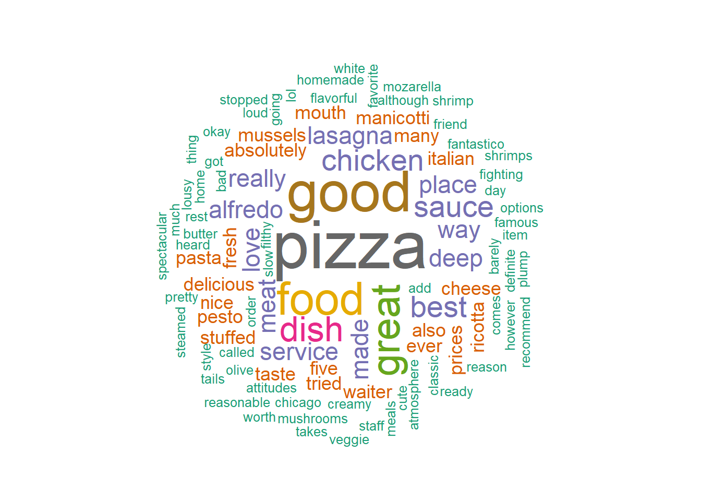

<<DocumentTermMatrix (documents: 21, terms: 185)>>
Non-/sparse entries: 254/3631
Sparsity : 93%
Maximal term length: 11
Weighting : term frequency (tf)
Sample :
Terms
Docs alfredo best chicken deep dish food good great pizza sauce
10 1 0 1 0 0 1 0 0 1 0
11 0 0 0 0 0 0 0 0 0 1
12 0 1 0 1 1 1 1 0 2 0
17 0 0 0 1 1 0 0 0 1 0
19 0 1 2 1 1 0 0 0 2 0
2 0 0 0 0 0 2 1 0 0 0
20 1 0 0 0 1 0 1 0 1 0
21 0 0 0 0 1 0 1 2 0 0
5 0 0 0 0 0 0 0 0 0 2
9 1 0 1 0 0 0 1 1 1 1Customer Review Analysis
Customer Review Analysis
1. Introduction
Customer reviews are important to see the feedback from customers to improve the business and take better decisions.
We use text mining to extract the information from the customer reviews.
2. Data Pre-Processing
We have to convert the unstructured data to structured data in order to apply descriptive statistics. In order to do this we have to remove uppercase letters, punctuation, numbers, and extra spaces. These need to be cleaned to ensure better analysis.
3. Document Term Matrix
We create a Document Term Matrix, where each row represents a document (review) and each column represents a term. The entries show the frequency of each term in each document.
4. Finding the Similarities with Cosine Distance
To measure how similar or dissimilar reviews are, we use Cosine Distance. Cosine similarity values close to 1 indicate very similar reviews, while values near 0 show dissimilarity. We convert the similarity into a distance metric for clustering.
5. Clustering
We apply Hierarchical Clustering using cosine distance to group similar documents together. The dendrogram below shows clusters of reviews based on their content.
6. Word Cloud
We make a word cloud to visualize the most frequent terms across all documents. Larger words indicate higher frequency, giving a quick overview of the most used words in the reviews.

The word cloud shows the words that appeared the most in the reviews which are - pizza, food, good, great, sauce, and chicken mean they were mentioned often, which tells us that these are the main things customers talk about. It is clear that pizza and Italian food are the main highlights. Positive words like love, best, fresh, and delicious show that customers mostly have a good opinion about the food. At the same time, words like service, prices, and waiter show that people also care about the overall dining experience, not just the taste. A few words like slow or prices point out areas where customers may not be fully satisfied.
7. Conclusion
It is clear that pizza and Italian dishes are the main focus of customer reviews. Most people use positive words like good, great, fresh, and love, which shows that the overall response is positive. Customers are happy with the food, especially pizza, but also talk about service and prices, which means these factors are important too. The restaurant has a good image, although some words like slow and filthy do come up it might a angry customer or an outlier. The restaurant should keep doing what its doing in order to get more positive reviews.